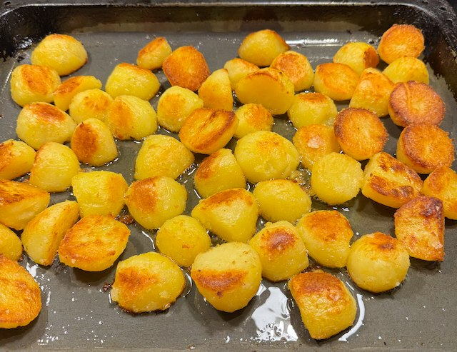

Serves: 4
Cook Time: 1 hour 30 min
Roast Potatoes

Ingredients
- 2kg potatoes
- 1 tsp table salt per 500ml water
- olive oil
- sunflower oil
- sea salt
Method
Heat oven to 180°C.
Peel and cut the potatoes into halves or quarters. Add to a pan with water and table salt. Bring to the boil, and boil for 5 min. Drain, return to the pan, and shake.
Add mix of olive oil and sunflower oil to a tray, and pre-heat in the oven for 5 min. Add the potatoes and a sprinkling of sea salt. Cook in oven for 1 hour. After 30 min give the potatoes a flip around. Turn the heat up to 190°C if they are not browning too well. Flip again after another 15 min so they get browned all over.